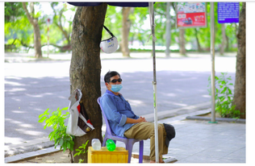

CHÙM ẢNH: “ HÀ NỘI TRONG NẮNG NÓNG NGỘT NGẠT 40 ĐỘ
Theo thông tin từ Trung tâm Dự báo Khí tượng Thủy văn quốc gia ngày 20/6, các tình thành trong khu vực phía Bắc, trong đó có Hà Nội tiếp tục duy trì tình trạng thời tiết nắng nóng gay gắt, nền nhiệt độ có nơi lên đến 38- 40 độ khiến người dân trong thành phố gặp không ít trở ngại khi ra đường.
12h trưa ngày 20/6, tại hồ Hoàn Kiếm – trung tâm Hà Nội có rất ít người qua lại. Nhiệt độ ngoài trời tại thời điểm này lên tới hơn 40 độ C

Sinh viên dùng ô che nắng khi đi bộ ra đường
Người dân đi xe máy qua đường lúc này phải ăn mặc kín mít

Dưới nền khí hậu gay gắt của Thủ đô Hà Nội, người dân lao động tại đây vẫn tuân thủ quy định đeo khẩu trang để phòng tránh dịch bệnh